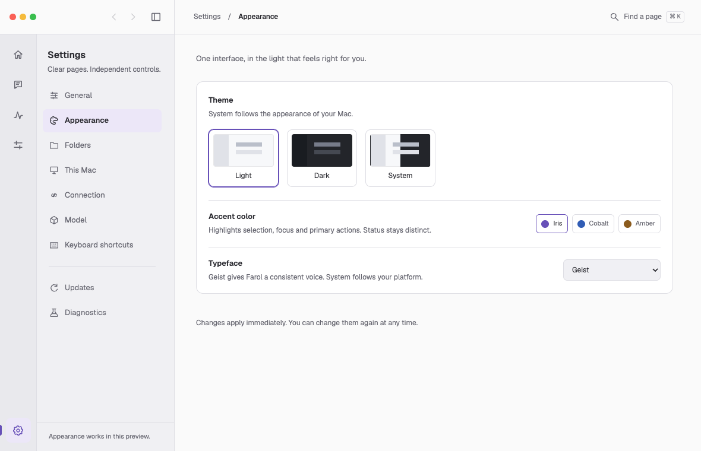

One interface. Ready to build.
A narrow rail, a contextual sidebar and one upper toolbar. Light and Graphite share the same layout. The saved prototype is the implementation reference.
UI approved · Dock icon pending
Dock icon: separate design iteration
The current Iris Glass, Prism and Aurora Enamel studies were rejected as too glossy and plastic. Keep the existing production icon. Signal Lens remains an abstract direction to simplify later.
